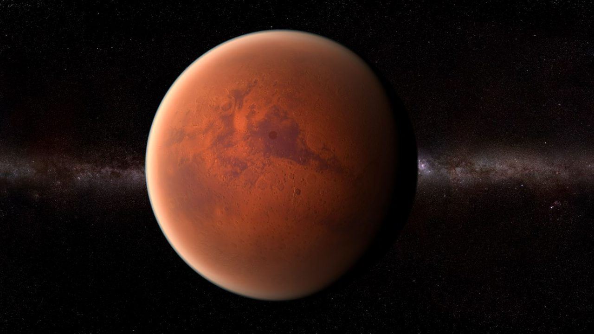

|  |
|
Marte es un planeta desértico y frío. Es la mitad del tamaño de la Tierra, y también recibe el nombre de "planeta rojo". Es rojo por el hierro oxidado que tiene en el suelo. Como la Tierra, Marte tiene estaciones, casquetes polares, volcanes, cañones y clima. Tiene una atmósfera poco densa hecha de dióxido de carbono, nitrógeno y argón. Hay signos de antiguas inundaciones en Marte, pero ahora el agua existe principalmente en su polvo helado y sus nubes delgadas. En algunas laderas marcianas, se han encontrado pruebas de agua líquida salada. Los científicos quieren saber si Marte podría haber tenido seres vivos en el pasado. También quieren saber si Marte podría albergar vida ahora o en el futuro. |